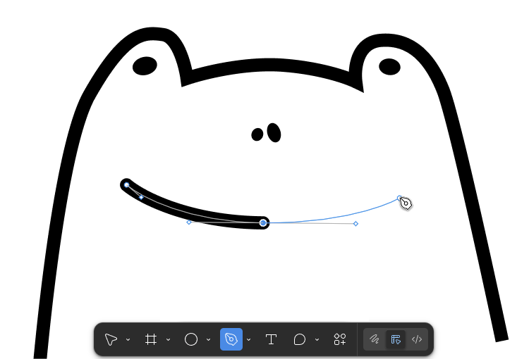
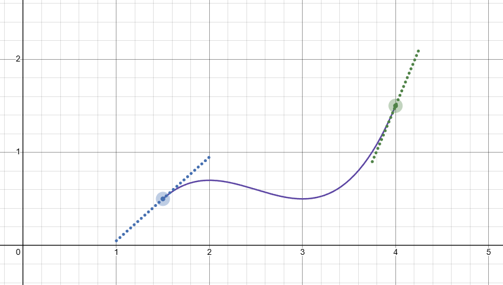
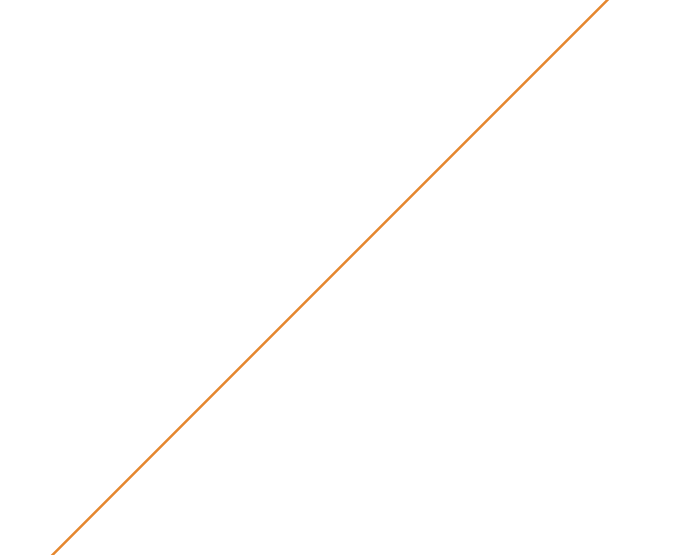
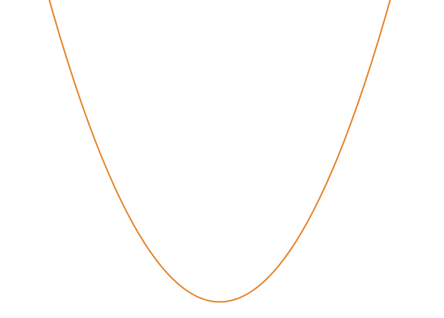
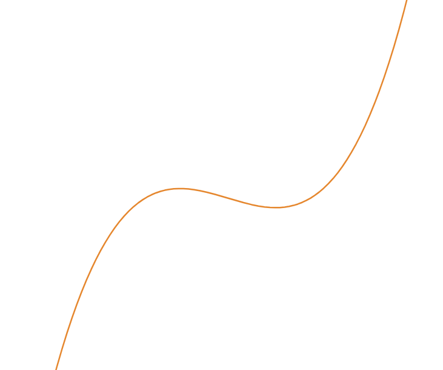
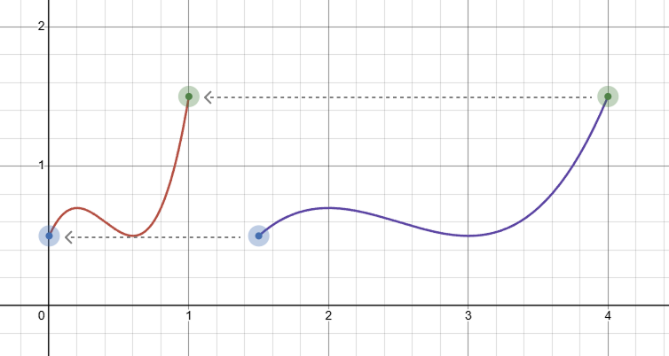

At some point, it became very useful to draw curves on the computer -- CAD, animation, video games, and more.
A simple curve can be defined just by the start point, end point, and the slopes of the curve at the two points. This is called a Hermite curve!
Let's say we want to actually implement the Hermite curve on a computer. How would we do that?
We'd need to define some sort of function that takes in the points and slopes as parameters, and when given an X coordinate, spits out a Y coordinate.
But what kind of function?
It can't be a linear function. There's no curve!
 $$y = ax + b$$
It can't be a quadratic function. Quadratic curves can only "open" one way.
 $$y = ax^2 + bx + c$$
But a cubic function looks promising!
 $$y = ax^3 + bx^2 + cx + d$$
Notice how \(a\), \(b\), \(c\), and \(d\) gives us 4 degrees of freedom. This makes sense since we have 4 parameters: start point, end point, slope at start point, and slope at end point. We'll call these parameters \(S\), \(E\), \(S'\), and \(E'\).
Let's find \(a\), \(b\), \(c\), and \(d\) in terms of \(S\), \(E\), \(S'\), and \(E'\)!
But first, let's make our lives easier by squishing (or expanding) \(x\) into a range between 0 and 1. We'll call the new variable \(t\) and call the function \(H(t)\).
Now, since the start point's \(x\) is at \(t = 0\), we can just plug in 0 to find the start point's \(y\):
We can do the same for \(E\), whose \(x\) is at \(t = 1\).
Easy so far, but what about the slopes \(S'\) and \(E'\)? Simple -- find the derivative of \(H(t)\)!
Now we can do the same thing as we did with the points, plugging in 0 and 1 to find the start and end slopes.
Let's not forget our goal -- finding \(a\), \(b\), \(c\) in terms of the parameters.
Well, we know \(d = S_y\) and \(c = S'\), but what about \(a\) and \(b\)?
It's just a matter of solving the system of equations! Let's start plugging in random bullshit.
Isolate \(b\):
Find \(a\), plugging in \(b\):
Find \(b\), plugging in \(a\):
Finally, we can construct the final equation:
That's it! Using this formula and \(S\), \(E\), \(S'\), and \(E'\), we can input an X coordinate and find the Y coordinate of the curve.
(Note that we'll have to convert the X coordinate to \(t\), our squished variable:)
We're pretty much done, but let's rearrange the formula so it's in terms of \(S\), \(E\), \(S'\), and \(E'\):
If you look up the Hermite curve elsewhere, it'll probably be in this format. The four "coefficients", \(2t^3 - 3t^2 + 1\), \(t^3 - 2t^2 + t\), \(-2t^3 + 3t^2\), and \(t^3 - t^2\), are known as the Hermite basis functions.
Now, you might be wondering, "b-b-b-ut what about Bézier curves?"
They're actually closely related. In fact, it's pretty simple to convert a Hermite curve into a cubic Bézier curve. Just take the slopes and extend them to control points, and presto! The formula for the cubic Bézier curve is left as an exercise to the reader :)